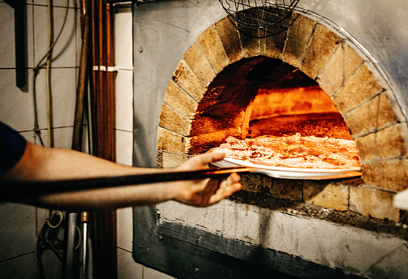
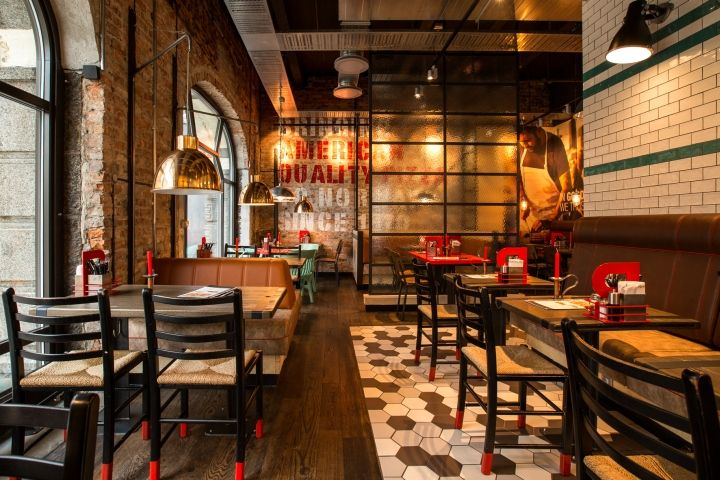

ΟΙ ΠΙΤΣΕΣ ΜΑΣ
Στην La Pizza Italiana χρησιμοποιούμε μόνο τα φρεσκότερα και καλύτερα συστατικά. Είμαστε μια ομάδα φίλων που δραστηριοποιείται στον χώρο της εστίασης πάνω από 20 χρόνια συνεχίζοντας με μεράκι την κληρονομιά που μας αφησαν οι προγόνοι μας.Εκτός από τις πρακτικές γνώσεις και την εμπειρία που έχουμε αποκομίσει από τη μέχρι τώρα πορεία μας,εξαρχής ξέραμε πως αυτό στο οποίο έπρεπε να επενδύσουμε ήταν η καλή πρώτη ύλη. Αρχικά το ζυμάρι μας και μετά όλα τα άλλα.

ΤΟ ΠΡΟΣΩΠΙΚΟ ΜΑΣ
Το προσωπικό μας είναι άρτια εκπαιδευμένο και εξυπηρετικό δημιουργώντας τις προυποθέσεις για να αποκτήσετε μοναδικές γευστικές εμπειρίες.

ΤΑ ΕΣΤΙΑΤΟΡΙΑ ΜΑΣ
Η εδραίωση της La Pizza Ιtaliana στον απαιτητικό χώρο της εστίασης ξεκίνησε από το μακρινό 1892 στην πανέμορφη πόλη της Σμύρνης. Η μετάβαση του εστιατορίου 110 χρόνια αργότερα από την Σμύρνη στην Νέα Σμύρνη απαιτούσε και τον ανάλογο σεβασμό στην παραδοσιακή διακόσμηση του. Έτσι την επιμέλεια της διακόσμησής τους ανέλαβαν διακεκριμένοι αρχιτέκτονες οι οποίοι με προσοχή και φρέσκια ματιά δημιούργησαν χώρους με έκδηλα τα στοιχεία της ιταλικής μεσογειακής κουζίνας.